Team Project: Huihe – "Cloud + Client" Intelligent Visual Recognition Solutions
Heils Technology Co., Ltd, Shenzhen (深圳禾思众成科技有限公司) is an AI startup company focusing on computer vision, with a core team formed by students from CMU, UIUC, NUS, XJTU and other top universities around the world.
Founded in 2015, the company focuses on deep learning computer vision algorithms, computing platforms and big data application research, where I was involved in their team providing leading Huihe – “Cloud + Client” (慧禾“云＋端”) intelligent vision solutions with collaboration of labs and industries.
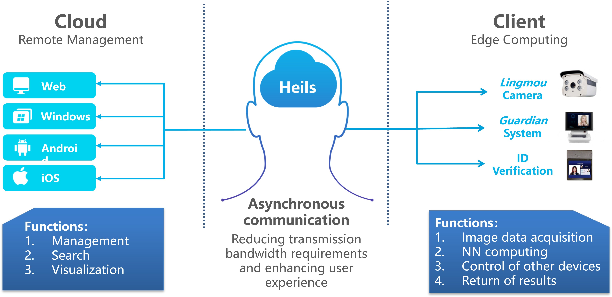
The “Cloud + Client” intelligent visual solution is a Computer Vision based commercial solution with combination of hardware and software, in which the cloud part focuses on structured data storage and data mining, including remote deep learning neural networks and other machine learning models; the client part consists of web, mobile phones, PCs, cameras and other devices, performing image capture and recognition functions.
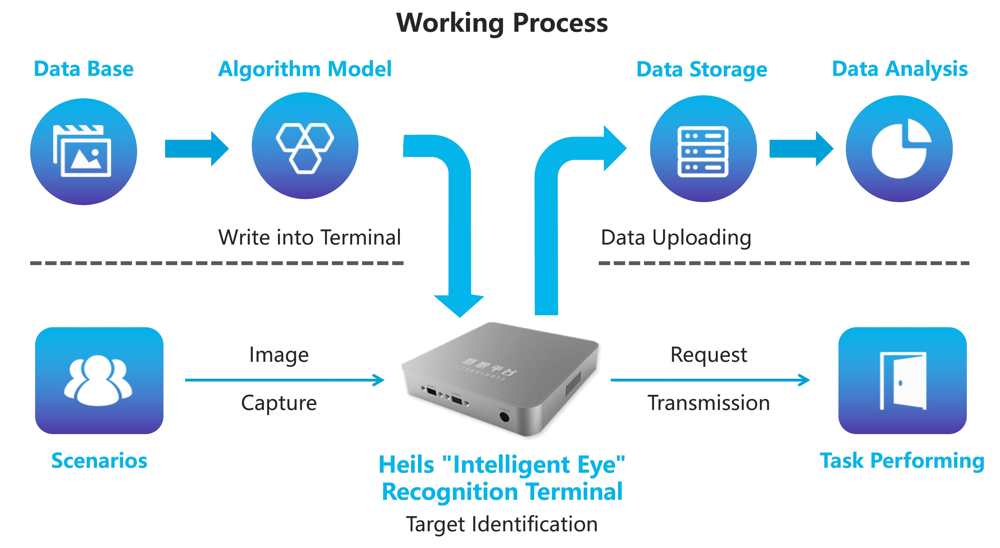
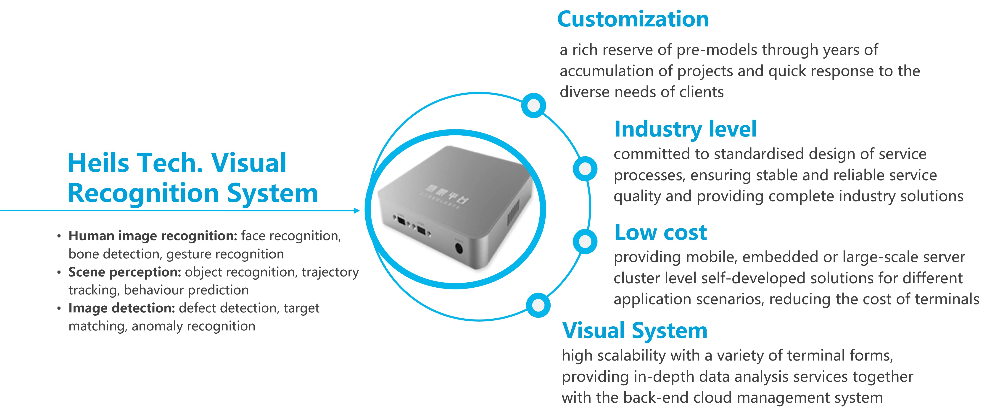
The solution was tested and implemented in 2 major domains: OCR in complex scenarios and AI-enabled traditional industries. For the complex scenarios including dim light, backlighting, glare, characters worn, partially hidden, partially obscured, etc., the system could adaptively recognize numbers, letters, Chinese characters and mathematic formulas, with achieved recognition rate reaching advanced level in the commercial use.
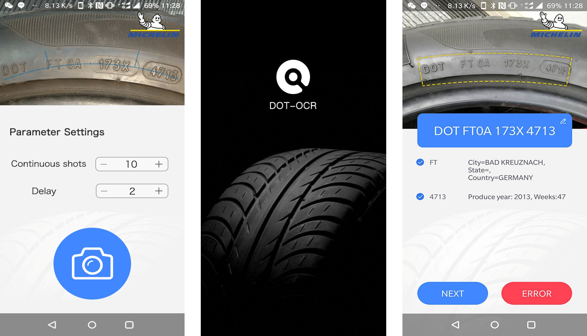
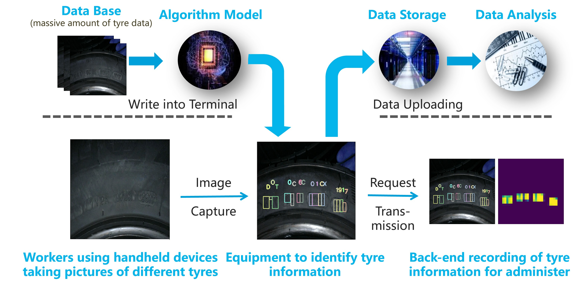
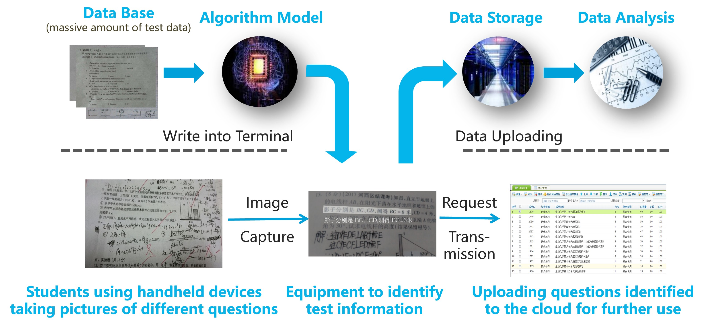
Considering the growing needs of intelligent visual recognition in numerous traditional industry departments, with Heils empowering them with cutting-edge AI technology could help improving productivity, saving energy, and achieving a more sustainable development.
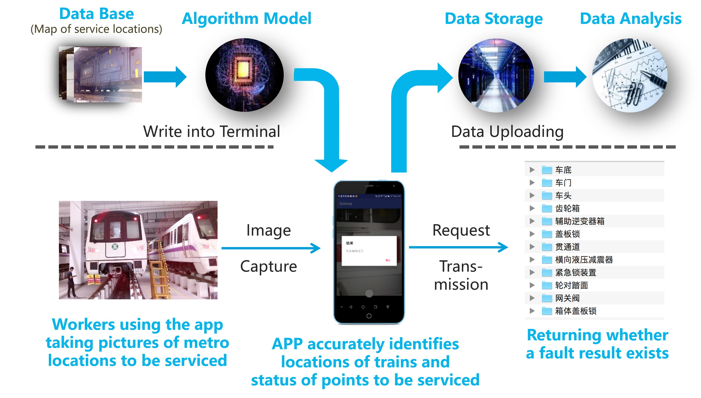
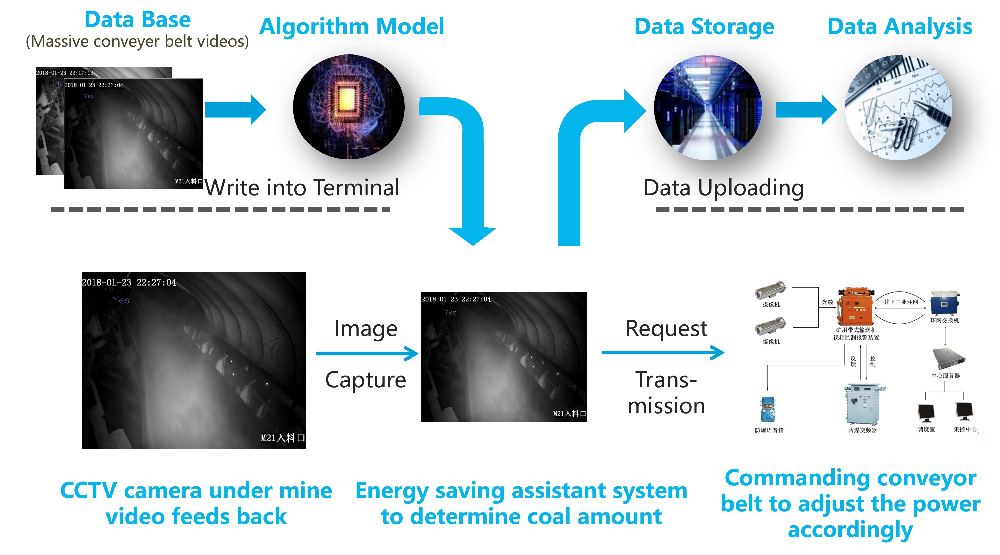
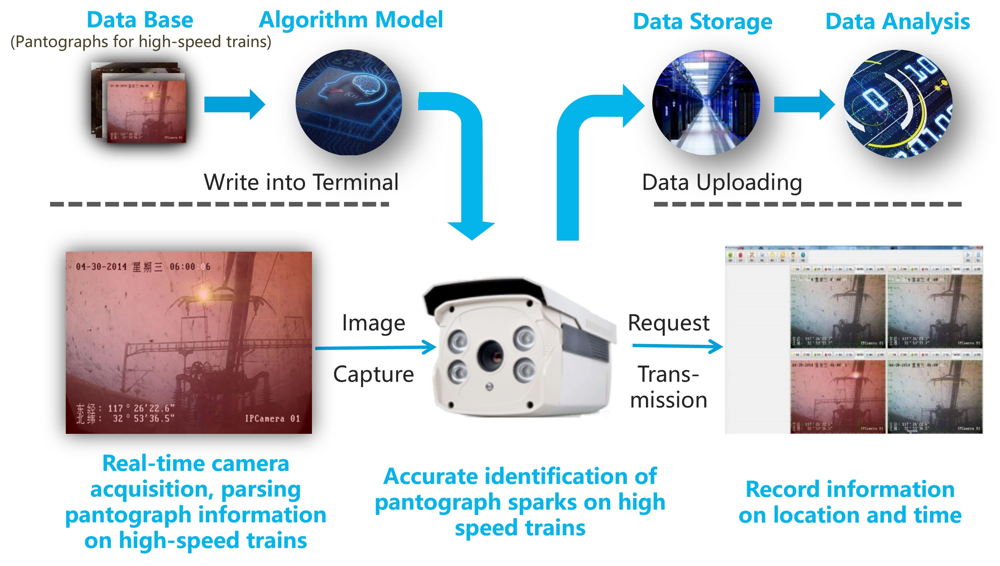
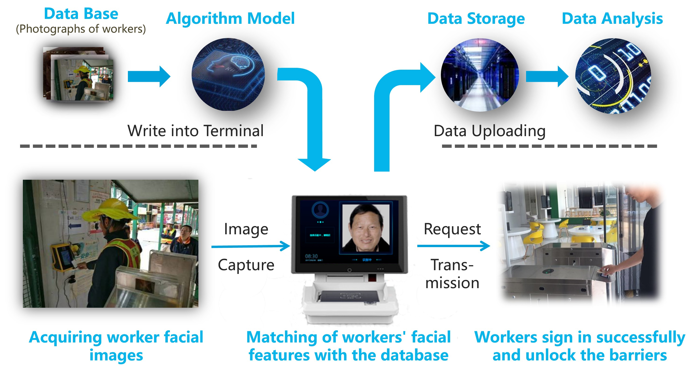
This team project has won a silver award in the 2018 National Undergraduate Entrepreneurship Competition and a gold award in the Shaanxi Provincial Semi-Final of the 4th China “Internet+” College Students Innovation & Entrepreneurship Competition.
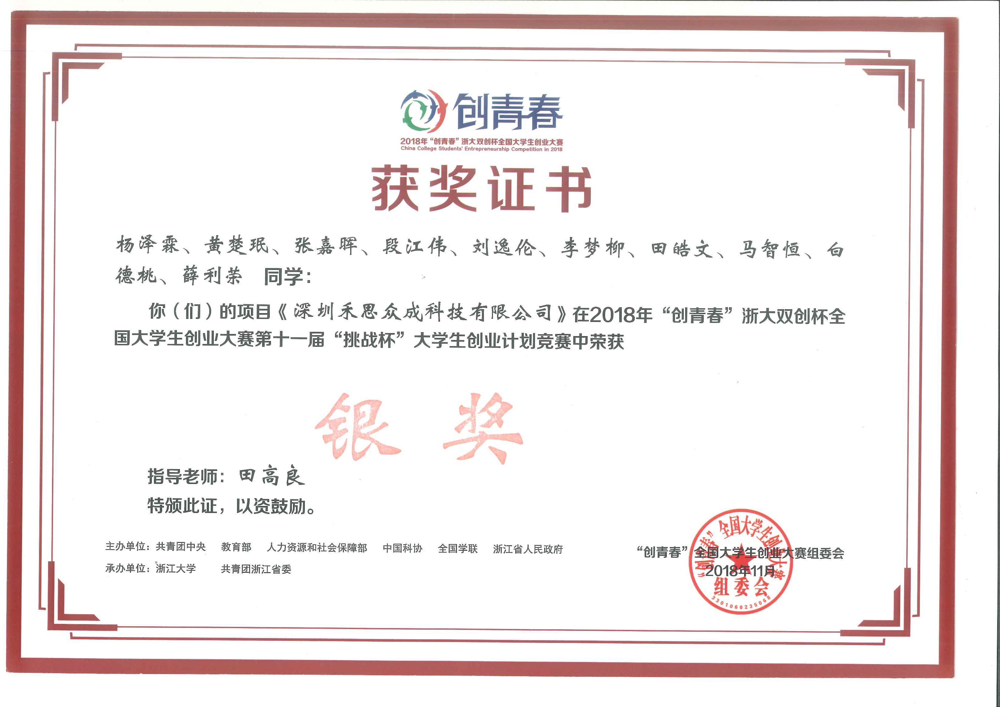
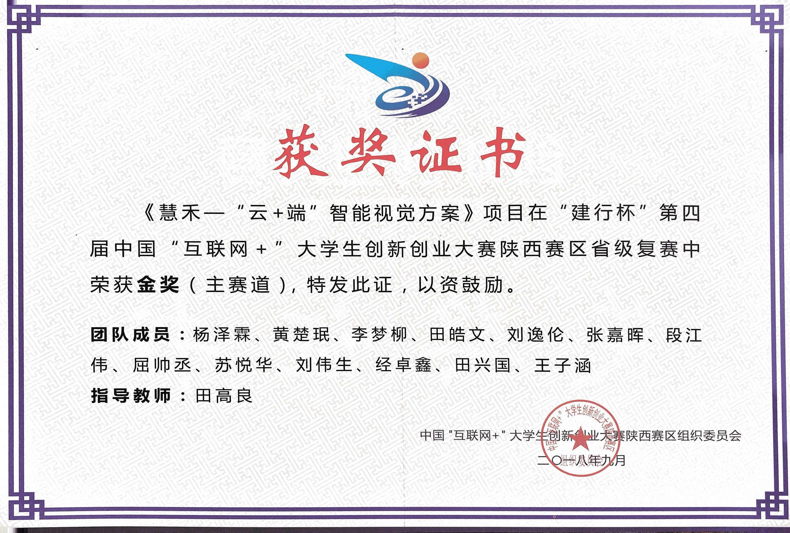